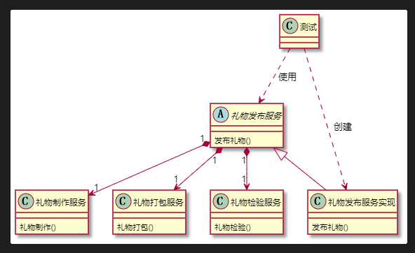
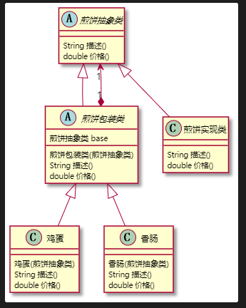
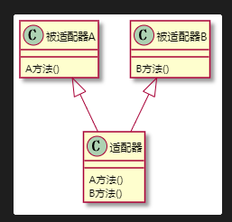
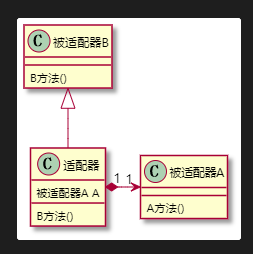
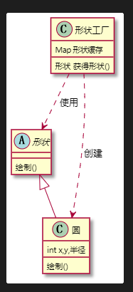
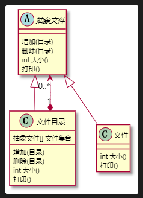
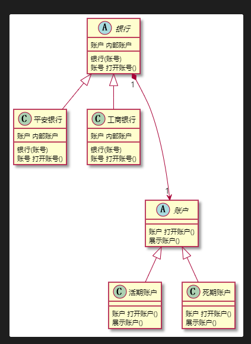

设计模式学习笔记——第四章
设计模式学习笔记——第四章
本文章是我在学习设计模式的时候所记下的笔记，只供我个人学习复习使用，不适合系统的学习，本文章的推荐资料也会在此贴出来。
返回设计模式首页
第四章 结构型设计模式
外观模式
定义:又叫门面模式，提供了一个统一的接口，用来访问子系统中的一群接口。外观模式定义了一个高层接口
适用场景：子系统越来越复杂，增加外观模式提供简单调用接口。构建多层系统结构，利用外观对象作为每层的入口，简化层间调用。
优点：简化了调用过程，无需了解深入子系统，防止带来风险。减少系统依赖、松散耦合。更好的划分访问层次。符合迪米特法则，即最少知道原则。
缺点：增加子系统、扩展子系统行为容易引入风险。不符合开闭原则。
相关设计模式：
- 外观模式和中介者模式
- 外观模式和单例模式
- 外观模式和抽象工厂模式
1 | @startuml 外观设计模式 |

源码示例: Spring的JDBCutils mybatis的Configuration
装饰者模式
定义：在不改变原有对象的基础之上，将功能附加到对象上。提供了比继承更又弹性的替代方案(扩展原有对象功能)
适用场景:扩展一个类的功能或给一个类添加附加职责。动态的给一个对象添加功能，这些功能可以再动态地撤销。
优点：继承的有力补充，比继承灵活，不改变原有对象的情况下给一个对象扩展功能。通过适用不同装饰类以及这些装饰类的排列组合，可以实现不同效果。符合开闭原则。
缺点：会出现更多的代码，更多的类，增加程序复杂性。动态装饰，多层装饰时会更复杂。
装饰者相关设计模式：
- 装饰者模式和代理模式 （装饰者模式更加注重的是在一个类动态地添加方法，代理模式更加注重的是控制对对象的访问 当使用代理模式的时候 是被代理类被代理类包装 而装饰者也是把原有装饰者传给新的装饰者再次进行包装）
- 装饰者模式和适配器模式(都可以被叫做包装模式 装饰者和被装饰者可以实现相同的接口 或者装饰者是被装饰者的子类 )
- 装饰者模式和建造者模式(自己想的 装饰者模式进行包装 建造者模式进行生成 完美！ )
1 | @startuml 装饰者设计模式 |

适配器模式
定义：将一个类的接口转换成客户期望的另一个接口。原本接口不兼容的类能够一起工作
使用场景：已经存在的类，它的方法和需求不匹配时(方法结果相同或相似)。不是软件设计阶段考虑的设计模式，时随着软件维护，由于不同产品、不同厂家造成功能类似而接口不相同情况下的解决方案。
优点：能够提高类的透明性和复用，现有的类复用但不需要改变。目标类和适配器类解耦，提高程序扩展性。符合开闭原则。
缺点：适配器编写过程需要全面考虑，可能会增加系统的复杂性。增加系统代码可读的难度。
扩展：对象适配器。类适配器。
相关设计模式：
适配器模式和装饰者模式(前面有提到)
适配器模式和外观模式
类适配器
1 | @startuml 类适配模式 |

对象适配器
1 | @startuml 类适配模式 |

享元模式
定义：提供了减少 持大量细粒度的对象。
适用场景：常常应用于系统底层的开发，以便解决系统的性能问题。系统中有大量相似对象、需要缓冲池的场景。
优点：减少对象的创建，降低内存种对象的数量，降低系统的内存，提高效率。减少内存之外的其他资源占用。
缺点：关注内/外部状态、关注线程安全问题。 使系统、程序的逻辑复杂化。
扩展：内部状态，外部状态。
1 | @startuml 享元模式 |

组合模式
定义：将对象组合成树形结构以表示“部分-整体”的层次结构。组合模式使客户端对单个对象和组合都西昂保持一致的方式处理。
使用场景：希望客户端可以忽略组合对象与单个对象的差异时。处理一个树形结构时。
优点：清楚地定义分层次的复杂对象，表示对象的全部或部分层次。让客户端忽略了层次的差异，方便对整个层次结构进行控制。简化客户端代码。符合开闭原则。
缺点：限制类型会较为复杂。使设计变得更加抽象。
相关设计模式：
- 组合模式和访问者模式
1 | @startuml 组合模式 |

桥接模式
定义：将抽象部分与它的具体实现部分分离，使它们都可以独立地变化。通过组合的方式建立两个类之间的联系，而不是继承。
使用场景：抽象和具体实现之间增加更多的灵活性。一个类存在两个(或多个)独立变化的维度，且这两个(或多个)维度都需要独立进行扩展。不希望使用继承，或因为多层继承导致系统类的个数剧增。
优点：分离抽象部分以及具体实现部分。提高了系统的可扩展度。符合开闭原则。符合合成复用原则。
缺点：增加了系统的理解与设计难度。需要正确地识别出系统种两个独立变化的维度。
相关设计模式：
- 桥接模式和组合模式
- 桥接模式和适配器模式
1 | @startuml 桥接模式 |

代理模式
定义：为其他对象提供一种代理，以控制对这个对象的访问。代理对象在客户端和目标对象之间起到中介的作用。
使用场景：保护目标对象。增强目标对象
优点：代理模式能将代理对象与真实被调用的目标对象分离。在一定程度上降低了系统的耦合度，扩展性好。
缺点：代理模式会造成系统设计种类的数目增加。在客户端和目标对象增加一个代理对象，会造成请求处理速度变慢。增加系统的复杂度。
扩展：静态代理，动态代理，CGLib代理
Spring代理选择-扩展：
- 当Bean有实现接口时，Spring就会用JDK的动态代理。
- 当Bean没有实现接口时，Spring使用CGlib
- 可以强制使用Cglib
- 在使用spring配置中加入<aop:aspectj-autoproxy proxy-target-class=”true”/>
代理速度对比-扩展
- CGlib
- JDK动态代理
- 速度对比 JDK稍微快一些
在JDK动态代理中， 代理类需要实现InvocationHandler接口 设计好代理类的构造方法，把被代理类当作参数出入 代理类中加入一个bind()方法 然后通过 Proxy.newProxyInstance() 获取代理对象。